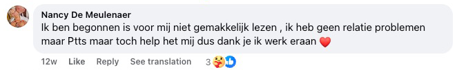
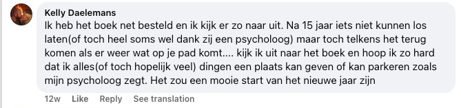
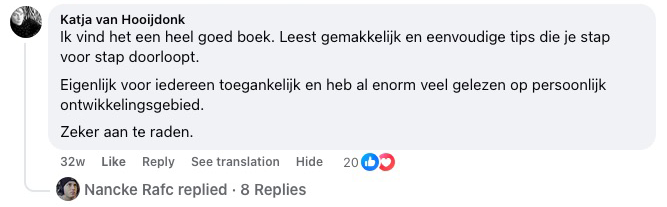
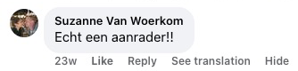

Fedezd fel a meglepő módszert, amely segít megállítani a gondolatok áradatát, lecsillapítani az érzelmeidet és megtalálni a belső nyugalmat — önpusztító szokások nélkül, és anélkül, hogy úgy kellene tenned, mintha minden rendben lenne, amikor nem az.
Ha nem akarod tovább magadban hordozni azt a fájdalmat, ami semmit sem ad neked – a megtört szívet, ami folyton kísért, a bűntudatot, amitől nem tudsz megszabadulni, vagy a haragot, ami fogva tart – akkor ez a könyv megadja neked azt az eszközt, megértést és mindenekelőtt azt a megkönnyebbülést, amire már oly régóta vágysz.


Ez a könyv NEKED szól, ha...
Nemrég szakítottál, és folyton az exed jár a fejedben
folyton a közösségi oldalait nézegeted, és egy olyan üzenetben reménykedsz, ami sosem érkezik meg
Emészt a bűntudat valami miatt, amit megtettél – vagy nem tettél meg
a fejedben újra és újra lejátszod, mit kellett volna másképp mondanod, és minden nap bünteted magad érte
Éjszaka nem tudsz aludni, mert a gondolataid folyton kavarognak
kimerülten alszol el, de az agyad nem hajlandó leállni, és reggel még fáradtabban ébredsz
Haragot vagy neheztelést érzel valakivel szemben, aki bántott téged
és bár tudod, hogy ez tönkretesz, nem tudod kiverni a fejedből
Egy árulás fájdalmát hordozod magadban, amit sosem dolgoztál fel
a párod, a barátnőd vagy a családod árult el, és a seb máig nem gyógyult be
Úgy érzed, fogva tart a múlt, és nem tudsz továbblépni
a múltban élsz ahelyett, hogy a jelenben lennél
Félsz, hogy az emberek elhagynak, és mindent megteszel, hogy senkit se veszíts el
még akkor is, ha közben elveszíted önmagad
Üresség tátong benned, és már nem tudod, ki vagy a fájdalom nélkül
mintha az identitásod maga a szenvedés lenne, amit magadban hordozol
9 ok, amiért ez a könyv megváltoztathatja az életedet
kezdd itt, ha elegged van a fájdalomból, a végtelen rágódásból és a belső káoszból.
- → Hogyan dolgozd fel a megtört szívet – tanuld meg átalakítani a szakítás vagy veszteség fájdalmát erővé és belső nyugalommá
- → Vége a fejedben zajló örökös gyötrődésnek – fedezd fel a gyakorlati technikákat, amelyekkel megtörheted a végtelen agyalás körforgását
- → Megbocsátani, de nem elfelejteni – találd meg az egyensúlyt a megbocsátás és az önvédelem között, hogy elkerüld a további fájdalmat
- → Érzelmi szabadság – szabadulj ki a harag, a bűntudat és a félelem bilincseiből, amelyek évek óta fogva tartanak
- → Önbizalom helyreállítása – építsd újra az önértékelésedet az érzelmi sebek után
- → Egészséges határok – tanuld meg „nem”-et mondani bűntudat nélkül, és védd meg a belső nyugalmadat
- → A múlt feldolgozása – ne élj tovább az emlékeidben – kezdd el felépíteni a jövődet
- → Jobb alvás – csendesítsd le az elmédet elalvás előtt, és ébredj kipihenten a kimerültség helyett
- → Új kezdet – fedezd fel, hogyan válhat a fájdalom a legnagyobb tanítóddá, és építs olyan életet, amelyre büszke lehetsz

📋 Termékspecifikáció
| Cím | Engedd el, ami tönkretesz |
| Szerző | Joris de Vries |
| Oldalszám | 290 oldal |
| Tartalmazza | Munkafüzet (gyakorlati feladatok) |
| Nyelv | Magyar |
| Kötés | Puhatáblás (paperback) |
| Ár | 10 999 Ft áfával |
| Szállítás | Ingyenes (egész Magyarországon, Packeta) |
| Garancia | 30 napos pénzvisszafizetés |
Ez a könyv pontosan az lehet, ami eddig hiányzott az életedből 💫
Talán már sok mindent kipróbáltál. Olvastál könyveket, amelyek szépen hangzottak, de sosem mentek igazán mélyre. Kipróbáltál terápiás módszereket, amelyek megkönnyebbülést ígértek, de a gyakorlatban semmit sem változtattak. És mégis itt vagy – mert belül tudod, hogy még mindig van remény. Hogy a belső nyugalom lehetséges. Hogy a fájdalom, amit hordozol, nem kell hogy örökre veled maradjon.
📘 Az Engedd el, ami tönkretesz nem csak egy újabb könyv a polcodon. Ez egy gyakorlati kalauz Joris de Vriestől, amely a krónikus rágódással, bűntudattal, szorongással és belső káosszal szerzett saját tapasztalataiból született. Ez a könyv segít neked:
- abbahagyni önmagad büntetését a múlt miatt,
- megtörni a negatív gondolatok spirálját,
- és újra megtalálni a bizalmat önmagadban és a saját utadban.
Mindezt érthetően és emberi módon – egyetlen közhely nélkül.
💛 És ez még nem minden, amit ma megkapsz:
- A könyvet (290 oldal), tele gyakorlati eszközökkel, amelyek tényleg működnek
- A munkafüzetet a könyv végén, amely segít az elméletet a gyakorlatba átültetni
- Ingyenes szállítást egész Magyarországon, Packeta futárszolgálattal
- 30 napos pénzvisszafizetési garanciát – kérdés nélkül, kockázat nélkül
✨ Tedd meg ma az első lépést.
Kattints az alábbi gombra, és rendeld meg a példányodat még ma. Nem azért, mert „muszáj”. Hanem azért, mert megérdemled, hogy jól érezd magad. Bűntudat nélkül. Maszk nélkül. És végre – a saját tempódban 🌱
MONEY
BACK
Meghosszabbított pénzvisszafizetési garancia
30 nap a szokásos 14 helyett – nem nyerte el a tetszésedet a könyv? 30 teljes napod van visszaküldeni, és visszakapod a pénzed.
📖 Olvass bele a könyv egy részletébe. Elméletet és munkafüzetet is tartalmaz, amely a te egyéni igényeidhez igazodik 🎯


Ha már elfáradtál a saját magaddal vívott harcban...
Ha éjszaka kísért, mit mondtál, mit nem mondtál, mit veszítettél el, vagy mit rontottál el...
Ha folyton reménykedsz, hogy talán megoldódik, vagy hogy egyszer majd magától elmúlik – de közben a saját fejedben vergődsz, és semmi sem változik...
Akkor ez a legfontosabb könyv, amit valaha kinyitsz.
És íme az ok:
A gondolataim folyton csak köröztek a fejemben – mint egy végtelen hurok, ami sosem áll meg.
„Mi lett volna, ha akkor másképp mondom?”
„Talán akkor még együtt lehetnénk.”
„Az egész az én hibám.”
Minden nap olyan volt, mint egy ismétlődő forgatókönyv – szorongás, emlékek, minden beszélgetés, minden csend újrajátszása. És otthon?
Üresség. Nem fizikai, hanem belső.
Körülvettek a dolgok, amelyek emlékeztettek arra, amit elveszítettem. És amit talán sosem lett volna szabad elengednem. Mindent kipróbáltam: terápiát, affirmációkat, meditációt, önmagam győzködését...
De semmi sem ment igazán mélyre. Semmi sem működött. Csak egy újabb nap... ugyanaz a fájdalom... ugyanazok a kérdések.
„Miért nem tudok továbblépni?”
„Mi a baj velem?”
„Miért reménykedem még mindig?”
Éreztem, hogy elveszítem önmagam.
És kételkedni kezdtem, hogy valaha is megtalálom-e a belső nyugalmat.

Minden egyes nap e könyv nélkül egy újabb nap, amit a saját fejedbe zárva töltesz.
Hány órát vesztegettél már el azzal, hogy újrajátszottad, ami történt – „Ha akkor másképp csináltam volna...”
Hányszor kívántad, hogy a fájdalom végre elmúljon?
Hogy belül végre csend legyen?
Minden perc megfelelő útmutatás nélkül több stresszt okoz neked, mint amennyit megérdemelnél.
És minden nap, amikor halogatod, egy olyan nap, amikor a régi fájdalomban ragadsz.
Egy napon azt mondtam magamnak: „Elég!”
Torkig voltam azzal, hogy a fájdalom, a bűntudat és a belső káosz árnyékában élek.
Elkezdtem válaszokat keresni – és pontosan ez vezetett el azokhoz a felismerésekhez, amelyek örökre megváltoztatták az életemet.
Ezeknek az elveknek köszönhetően többé nem voltam a saját érzelmeim rabja.
És a belső háború helyett végre megtaláltam azt a nyugalmat, amire évekig vágytam. Mi történt aztán?
A körülöttem lévők észrevették a változást.
Megkérdezték:
„Hogy csináltad?”
Így elkezdtem megosztani, ami tényleg működik. Semmi elmélet. Semmi üres szó. Hanem az, ami segít a fájdalom, veszteség, bűntudat és harag valódi pillanataiban.
Az eredmény ez a könyv. Egy könyv, amely nemcsak a „megbocsátásról” szól, hanem arról, hogyan találd meg újra önmagad.
A gyógyulásról. És arról, hogyan hagyd abba, hogy bántsd magad. Mindegy, hogy egy friss szakítás, egy régi árulás, vagy évek óta feldolgozatlan bűntudat gyötör – önmagad vagy más iránt.
Ez a könyv megmutatja, hogyan találj vissza önmagadhoz.
A saját módodon.
Maszk nélkül.
Nyomás nélkül.
Szégyen nélkül.
És tudod, mit?
Nem én vagyok az egyetlen, akinek bevált.
Az ő történeteik és az enyém is. Emberek, akik évekig nem tudták elengedni a fájdalmukat, hirtelen újra szabadon lélegeztek.
Akik a bűntudatban fuldokoltak, először néztek a tükörbe szégyen nélkül.
És akik teljesen elveszettnek érezték magukat, megtalálták a visszautat önmagukhoz.
És figyelj – ez a megközelítés azért működik ilyen jól, mert valóban eléri azt, ami belülről fogva tart minket.
A belső bénultságtól a dühkitörésekig. A magánytól a maszkviselésig.
A múlt elengedésének képtelenségétől az önutálatig. Ennek a könyvnek minden lépése gondosan úgy van felépítve, hogy valódi megkönnyebbüléshez vezessen – nem csak néhány napos inspirációhoz.
És az eredmények?
Pontosan az, amire mindannyian vágyunk: megkönnyebbülés, nyugalom és az érzés, hogy végre újra otthon vagy – a testedben, a fejedben és a szívedben egyaránt.
És tudod, mit?
Írhatnék erről egy külön könyvet is – csak azoknak az embereknek a történeteiről, akiknek ez a megközelítés teljesen megváltoztatta az életét.
Ezeket a módszereket ugyanis a legkülönbözőbb korú, élethelyzetű és belső fájdalmakkal küzdő emberekkel osztottam meg. Azoktól, akik éppen egy friss szakításon mentek keresztül…
Egészen azokig, akik 20 évig elfojtották a haragjukat. A szorongással küzdő emberektől, akik már a reggeltől is féltek…
Egészen azokig, akik belül már egyáltalán semmit sem éreztek. És az eredmény? Olyan megkönnyebbülés, amit korábban el sem tudtak képzelni.
Belső csend ott, ahol egész életükben kiabálás volt.
Fájdalommentes légzés. És tér – az új, gyengéd kezdetekhez.
Néhány „szakértő” még meg is kérdezte tőlem:
Tényleg működik ez?
Nem túl egyszerű ez egy kicsit?
Nos…
erre mindjárt visszatérünk. De előbb – nézzünk meg további bizonyítékokat arra, hogy ez az út valóban működik.

📚 Európa-szerte találtak már nyugalmat olvasók ennek a könyvnek köszönhetően – és ugyanúgy kezdték, mint te: fáradtan, túlterhelten, de készen a változásra ✨
Mintha varázsütésre történt volna…
Minél többet hallottam olyan olvasóktól, akik fájdalommal, veszteséggel vagy belső küzdelemmel néztek szembe, annál egyértelműbbé vált: ezek az elvek mindenhol működnek.
Éreztem, hogy ez a megközelítés más – de kezdetben nem tudtam pontosan, miért. Ezért mélyebbre ástam. Elkezdtem mintázatokat látni.
Ismétlődő belső párbeszédek, védekező mechanizmusok, amelyek újra és újra visszatértek.
Teszteltem. Megfigyeltem. Gondolkodtam. És lépésről lépésre felépítettem egy módszert, amely nem csak a tüneteket kezeli, hanem az okot. És az eredmények?
Az emberek, akik azt hitték, sosem fognak megváltozni, hirtelen valódi megkönnyebbülést éreztek.
Akik azt hitték, „ez van, ilyen vagyok”, újra elkezdtek fejlődni.
És aki teljesen elveszettnek érezte magát, újra megtalálta az iránytűjét.
Azóta ezt a módszert szinte minden olyan fájó pontra alkalmaztam, amely a legjobban gyötri az embereket:
- Bűntudat és szégyen: Tanuld meg, hogyan bocsáss meg magadnak, és hagyd abba a múltbeli hibák miatti önbüntetést. Ehelyett újra könnyedséget és önértékelést kezdesz érezni.
- Harag és neheztelés: Eszközöket kapsz, hogyan engedd el a régi sebeket, és hagyd abba a fejedben folytatott harcot azokkal, akik bántottak. Nem a „leszámolás” miatt, hanem azzal a bizonyossággal, hogy már nincs hatalmuk feletted.
- A magány érzése: Tanuld meg, hogyan teremts biztonságot önmagadban, még ha körülötted senki sincs is, aki megértene. Rájössz, hogy egyedül lenni nem jelent ürességet.
- Állandó rágódás: Abbahagyod a „mi lett volna, ha” forgatókönyvek lejátszását, és megtanulod megállítani a gondolatspirált, mielőtt elnyelne. Az elméd újra a nyugalom helye lesz, nem a félelem területe.
- Félelem a veszteségtől / elhagyástól: Fedezd fel, hogyan kezeld azt a mély félelmet, hogy elveszítesz valakit – anélkül, hogy lemondanál a közelség vagy az önértékelés igényéről.
- Megrekedés a múltban: Tanuld meg, hogyan hagyd abba a múltban élést – és tedd meg végre az első valódi lépést előre. Nem csupán „tedd túl magad rajta”, hanem valódi gyógyulás belülről.
És minden olyan helyzetben működik, amikor megpróbálsz elengedni valamit, ami belül gúzsba köt.
Ezeket az elveket a saját életedben is alkalmazhatod – és végre elkezdhetsz könnyedséggel, nyugalommal és azzal a bizonyossággal élni, hogy meg tudod csinálni.
Ez nem elmélet. És nem is üres spirituális duma.
Ez egy gyakorlati rendszer, amely Európa-szerte segít az olvasóknak megbirkózni a bűntudattal, szomorúsággal, félelemmel, haraggal és stagnálással.
Ennek a könyvnek minden eszköze közvetlenül a személyes tapasztalatból ered – évekig tartó keresés, valódi történetek, elesések és felállások gyümölcse.
És pontosan ezért döntöttem úgy, hogy megosztom a felismeréseimet. Hogy neked ne kelljen ugyanazon a fájdalmon keresztülmenned, mint nekem.
Azokkal a végtelen esti órákkal, amikor összeroskadsz a saját gondolataid alatt. Azzal a kimerítő érzéssel, hogy mindent kipróbálsz… és semmi sem működik.
Azzal a csendes kétségbeeséssel, amikor azt mondod magadnak:
„Talán ez már sosem múlik el.”
De nem kell ott maradnod.
Ez a könyv megmutatja, hogy van másik út – és hogy közelebb van, mint gondolnád.
És megértem, ha még mindig bizonytalan vagy. De ne aggódj – mindjárt elárulom a „titkot”, hogy miért osztom meg mindezt… és miért nem kerül több tízezer forintba.
De előbb – nézzük meg…
Olvasók Hollandiából, Belgiumból, Svédországból, Norvégiából és Németországból
önmagukra találtak ebben a könyvben.
A megértés a gyógyulás kezdete 💡
📌 Valódi vélemények Hollandiából — egyetlen kitalált szó nélkül.
Az alább látható vélemények valódi Facebook-bejegyzések és hozzászólások azokból az országokból, ahol a könyv először jelent meg, és ahol már ezrek olvasták — ezért hollandul szerepelnek.
Nem akartunk hazudni. Nem akartunk kitalált véleményeket közzétenni, és nem akartunk semmit megszépíteni csak azért, hogy meggyőzőbbnek tűnjön.
Ezért tudatosan úgy döntöttünk, hogy a véleményeket pontosan úgy tesszük közzé, ahogy az olvasók megírták — az eredeti nyelven, fordítás, szerkesztés vagy egyetlen szó megváltoztatása nélkül. Így biztos lehetsz benne, hogy valódi szavakat olvasol valódi olvasóktól.
Maga a könyv ugyanakkor teljes egészében magyar nyelvű — igényes, nyelvtanilag pontos fordításban, a nyelv iránti érzékkel.
📖 Tipp: a vélemények magyar nyelvű elolvasásához használd a böngésződ fordító funkcióját.
Mit írnak a könyvről az olvasók — magyarra fordítva
Lapozgass a vélemények között balra és jobbra. Minden fordítás alatt megtalálod az eredeti Facebook-hozzászólást, így bármikor magad is ellenőrizheted a hitelességét.














Ki a szerzője ennek a könyvnek?

Joris de Vries vagyok. És ezt a könyvet nem elefántcsonttoronyból írtam – hanem életem legmélyebb gödréből.
Tizenöt évvel ezelőtt elvesztettem mindent, amit ismertem.
A kapcsolatom összeomlott. Az önbizalmam eltűnt. Éjszaka nyitott szemmel feküdtem, a gondolatok végtelen hurkainak fogságában. A bűntudat belülről emésztett. Már nem tudtam, ki vagyok – és azt sem, miért keljek fel reggel.
Mindent kipróbáltam. Önfejlesztő kézikönyveket, podcastokat, meditációs alkalmazásokat, beszélgetéseket barátokkal. Semmi sem ért el a lényegig.
Amíg rá nem jöttem, hogy a választ magamnak kell megtalálnom.
Elkezdtem olvasni. Nem egy könyvet, hanem százakat. Idegtudományról, filozófiáról, pszichológiáról. Utaztam, beszéltem emberekkel, akik ugyanazon mentek keresztül, és lassan összeraktam a kirakós darabjait.
Évekbe telt. Évekig tartó elesések és felállások. Visszaesések és áttörések. Kétségek és végül – felszabadulás.
- Magam is átéltem a legmélyebb völgyeket – és megtaláltam a visszautat
- Éveken át önállóan tanulmányoztam az idegtudományt, a filozófiát és az emberi viselkedést
- Kifejlesztettem a saját módszeremet, amely segített nekem és másoknak is
- Mindent, amit megtanultam, összefoglaltam ebben a könyvben – hogy neked ne kelljen ugyanazt a kerülőutat bejárnod
Amit felfedeztem, megváltoztatta az életemet:
A legtöbb ember nem attól szenved, ami történt vele – hanem attól, amit erről gondol.
Ez a felismerés vált a könyv alapjává.
A módszer a következők kombinációja:
- Idegtudományi ismeretek (hogyan szabotál téged a saját agyad)
- Keleti filozófia (az elengedés művészete)
- Gyakorlati feladatok (konkrét lépések, amelyek azonnal működnek)
📖 Az Engedd el, ami tönkretesz könyv olvasói már az első hetekben valódi változást tapasztalnak — több nyugalmat, tiszta fejet és érzelmi megkönnyebbülést 🌟

Talán nem ez az első könyv, amit olvasol 📖
És talán pontosan ezért lehet ez az utolsó, amire igazán szükséged van.
Talán már mindent kipróbáltál.
Tanácsokat, amelyek szépen hangzottak, de semmit sem változtattak.
Módszereket, amelyek működtek… a következő zuhanásig.
És mégis itt vagy. És ez jelent valamit. Azt jelenti, hogy még nem veszítetted el a hitedet.
Hogy belül még mindig tudod, hogy a megkönnyebbülés lehetséges. Hogy a nyugalom nem álom, hanem képesség. És hogy a fájdalmadnak nem kell örökre veled maradnia.
📚 Az Engedd el, ami tönkretesz nem sebtapasz – ez egy térkép. Térkép vissza önmagadhoz.
A szerző, Joris de Vries, ebben a könyvben egyértelmű, működő és emberi lépéseket oszt meg, amelyek segítettek neki és másoknak is:
- elengedni a bűntudatot és önbüntetést,
- megtörni a rágódás és a belső hangok körforgását,
- újra megtalálni a bizalmat – önmagadban, az életben és másokban.
Ne számíts ezoterikus dumára. Sem rideg, együttérzés nélküli pszichológiára. Számíts inkább őszinteségre. Nyitottságra. És megkönnyebbülésre.
✨ Az első lépés kicsi. De mindent megváltoztathat.
Nem kell mindent megoldanod ahhoz, hogy elkezdd. Nem kell erősnek lenned – elég nyitottnak lenned arra a gondolatra, hogy másképp is lehet.
👉 Kattints a gombra, és kezdj el olvasni.
Talán itt találod meg azt a nyugalmat, amit már régóta keresel.
Ingyenes szállítás
Egész Magyarországon Packeta futárszolgálattal – a postaköltséget mi álljuk. Te csak a könyvért fizetsz – a többiről mi gondoskodunk.
🎁 Az alábbi bónuszok csak ma járnak az Engedd el, ami tönkretesz könyv megrendelése mellé – ne szalaszd el ezt az egyedülálló lehetőséget! ⏰

🎁 #1 BÓNUSZ: A túlgondolás ellenszere e-könyv
Ezt az exkluzív bónusz e-könyvet ingyen kapod, ha még ma megrendeled a könyvet. Tartalmaz gyakorlati eszközöket és feladatokat, amelyek tökéletesen kiegészítik a fő könyvet.
- Extra munkalapok az önismeret elmélyítéséhez
- Napi gyakorlatok, hogyan ültesd át az elméletet a gyakorlatba
- Exkluzív felismerések, amelyeket máshol nem találsz meg
- Azonnal letölthető a rendelés után

🎁 #2 BÓNUSZ: Szerelem cenzúra nélkül e-könyv
Az igazság a kapcsolatokról, amelyről senki sem mer beszélni. Ne akarj többé mindenkinek megfelelni. Ne veszítsd el önmagad egy olyan kapcsolatban, amely kimerít, megsebez és lassan tönkretesz. Szerezd vissza az erődet, tisztánlátásodat és képességedet, hogy azt válaszd, amit te akarsz – nem azt, amit mások várnak tőled.
Ez nem egy kellemes kézikönyv a kommunikációról. Ez a könyv szembesülés önmagaddal. Miért vagy ott, ahol vagy. És mit kell tenned, hogy kikerülj belőle.
Érzed, hogy valami nincs rendben a kapcsolatodban? Kételkedsz, hogy te vagy-e a hibás – vagy a másik? Elveszítetted a kapcsolódást, a vonzalmat vagy önmagadat? Ez a könyv szétzúzza az illúzióidat. És segít, hogy újra talpra állj.
- Fedezd fel az önpusztító mintáidat, és tanulj meg velük dolgozni
- Szerezd vissza az irányítást az érzelmeid, félelmeid és reakcióid felett
- Értsd meg, mit jelent a valódi elköteleződés – és mikor jött el az ideje a továbblépésnek
- Vállalj teljes felelősséget, és teremts olyan kapcsolatot, amely tényleg működik
- Ne várd, hogy a másik megváltozzon. Változtasd meg magad – és minden megváltozik veled együtt
Talán éppen most kérdezed magadtól – „Miért kellene pénzt költenem erre a könyvre?” 🤔📘 A válasz egyszerű:
30 napod van kipróbálni – és ha mégsem válna be? Visszakapod a pénzed.
Kérdés nélkül, bonyodalmak nélkül. De mindketten tudjuk, hogy nem fogod visszaküldeni. Mert amint elkezdesz olvasni, érezni fogod, hogy ez a könyv megváltoztathatja az életedet.
Miben más ez a könyv:
- Gyakorlati alkalmazhatóság – Ez a könyv nemcsak felismeréseket kínál, hanem konkrét lépéseket is, amelyeket rögtön alkalmazhatsz a mindennapi életedben.
- Tapasztalatra épül – A módszerek személyes tapasztalatból és évekig tartó önálló tanulmányozásból származnak, így tudhatod, hogy őszinte, bevált eszközöket kapsz.
- A mély gyógyulásra összpontosít – Más könyvekkel ellentétben ez az érzelmi terhed gyökerét célozza meg, nem csak a felszíni tüneteket.
- Érzelmi közelség – A könyv empátiával és megértéssel íródott, így a belső nyugalomhoz vezető utadon meghallgatottnak és támogatottnak érzed majd magad.
- Egyedülálló meglátások – A könyv olyan meglepő nézőpontokat kínál, amelyeket máshol nem találsz, és ezeknek köszönhetően teljesen új szemmel nézel majd önmagadra és az érzelmeidre.
Könyv, amit a saját tempódban olvashatsz
Semmi sietség, semmi nyomás. Kezdd el, amikor készen állsz, és annyi időt szánj rá, amennyire szükséged van.
Gyakorlati eszközök minden napra
A konkrét feladatoknak és a munkafüzetnek köszönhetően rögtön elkezdheted – lépésről lépésre, a saját tempódban.
Megérdemled, hogy szabad légy
A megbocsátás és az elengedés nem gyengeség – hanem erő. Ez a könyv segít helyet teremteni annak, ami valóban boldoggá tesz.
📦✨ Készen állsz belevágni? Rendelj még ma, és a könyvet házhoz szállítjuk 📘🙏
A belső nyugalomhoz vezető utad itt kezdődik.
📘 A könyvet a munkafüzettel együtt mindössze 10 999 Ft-ért kapod meg – kevesebbért, mint amennyibe egy kétszemélyes vacsora vagy egy tele tank benzin kerül.
De ezekkel a dolgokkal ellentétben ez a könyv egy életre szóló értéket ad neked. 💎💚
Segít megtalálni a belső nyugalmat, elengedni azt a fájdalmat, amit évek óta magadban hordozol, és újra otthon érezni magad a saját bőrödben. ❤️
Ennek a kis befektetésnek köszönhetően olyan gyakorlati eszközöket kapsz, amelyeket évekig használhatsz – bármikor, amikor szükséged van rájuk, a saját tempódban. 🌱
❓ A leggyakrabban feltett kérdések 💬
Tényleg működik? Nem csak egy újabb üres önfejlesztő könyv ez?
Teljesen megértem a kételyeidet. Az „Engedd el, ami tönkretesz” nem egy tipikus önfejlesztő könyv, tele homályos tanácsokkal vagy szép idézetekkel. Személyes tapasztalatra és az idegtudomány, filozófia és emberi viselkedés éveken át tartó önálló tanulmányozására épül. Joris de Vries azután fejlesztette ki ezeket a technikákat, hogy maga is átélt egy mély krízist, és megtalálta a visszautat. A különbség a gyakorlati, konkrét lépésekben rejlik, amelyek tényleg működnek – még akkor is, ha a mélyponton érzed magad. És a 30 napos pénzvisszafizetési garanciánknak köszönhetően egyáltalán semmit sem kockáztatsz.
Már annyi mindent kipróbáltam – miért lenne ez más?
Érthető, hogy szkeptikus vagy – frusztráló időt és reményt fektetni különböző módszerekbe, amelyek végül semmilyen valódi változást nem hoznak. Ez a könyv azért más, mert közvetlen, gyakorlati megközelítést kínál, amely személyes tapasztalaton alapul, nem száraz elméleten. A szerző valódi történetéből született, aki korábban maga is „mindent” kipróbált, de a megkönnyebbülést végül a saját módszerének köszönhetően találta meg. Az általános tanácsokkal ellentétben itt konkrét technikákat kapsz, amelyek akkor is működnek, amikor kimerültnek érzed magad. És ha a könyv mégsem nyerné el a tetszésedet, a 30 napos pénzvisszafizetési garanciánknak köszönhetően semmit sem kockáztatsz.
Mi van, ha nálam ez nem fog működni? Az én helyzetem más vagy bonyolultabb.
Minden ember egyedi, és a saját történetét hordozza. Pontosan ezért úgy tervezték az „Engedd el, ami tönkretesz” könyvet, hogy rugalmas eljárásokat kínáljon, amelyek különböző helyzetekhez és bonyolultsági szintekhez igazíthatók – a friss szakításoktól az évek óta feldolgozatlan fájdalomig. A könyvben található munkafüzet lehetővé teszi, hogy a módszereket a saját konkrét körülményeidre alkalmazd. Olvasók a legkülönbözőbb történetekkel – a veszteséggel való megbirkózástól a bűntudaton át a haragig és a nyugtalanságig – már találtak támaszt ebben a könyvben. És ne feledd: 30 napos pénzvisszafizetési garanciát kínálunk, kellemetlen kérdések nélkül.
Nem sok 10 999 Ft egy könyvért?
Nemcsak egy 290 oldalas könyvet kapsz – jár mellé a gyakorlati munkafüzet és az ingyenes szállítás is egész Magyarországon, Packeta futárszolgálattal. Sok olvasónk írta nekünk, hogy a könyv egyetlen felismerése is rengeteg időt és energiát megspórolt nekik. Egy esti program áráért olyan eszközöket kapsz, amelyeket évekig használhatsz. És ha több példányt rendelsz, akár 13 997 Ft-ot is megspórolhatsz a kedvezményes csomagoknak köszönhetően. A 30 napos pénzvisszafizetési garanciánkkal egyáltalán semmit sem kockáztatsz.
Nem lenne jobb inkább terapeutára költeni a könyv helyett?
A terápia és ez a könyv egyáltalán nem zárják ki egymást – sőt, remekül kiegészíthetik egymást. Sokan ezt a könyvet használják a gyógyulás felé vezető út első lépéseként, vagy a terápia mellett olvassák a mélyebb megértéshez és a gyakorláshoz az ülések között. Néhány terápiás ülés árának a töredékéért olyan eszközöket kapsz, amelyeket bármikor használhatsz, amikor szükséged van rájuk – akár az éjszaka közepén, otthon, a saját tempódban. Rögtön elkezdheted, várólista nélkül. És ha később személyes útmutatásra lesz szükséged, ez a könyv olyan szilárd alapot ad, amellyel sokkal többet hozhatsz ki a terápiából.
Ki az a Joris de Vries? Megbízhatok benne?
Joris de Vries olyan szerző, aki maga is átélt egy mély személyes krízist – és erősebben került ki belőle. Az idegtudomány, filozófia és emberi viselkedés éveken át tartó önálló tanulmányozása után kifejlesztett egy gyakorlati módszert, amely segített neki elengedni azt, ami tönkretette. A könyvben található módszerek nem elméletiek – valódi személyes tapasztalatból születtek. Megközelítése különböző területek ismereteit ötvözi, és érthető technikákká alakítja őket, amelyeket bárki alkalmazni tud. Az ő módszerét kockázatmentesen kipróbálhatod a teljes 30 napos pénzvisszafizetési garanciánknak köszönhetően.
Miért nem kapható ez a könyv rendes könyvesboltokban?
Tudatosan a közvetlen értékesítést választottuk, hogy a legjobb élményt nyújthassuk neked. Ennek köszönhetően ingyenes szállítást, kedvezményes többpéldányos csomagokat és személyes 30 napos pénzvisszafizetési garanciát kínálhatunk – olyan dolgokat, amelyek a 40–60%-os jutalékot felszámoló nagy platformokon keresztül lehetetlenek. Ráadásul így közvetlen ügyfélszolgálatot tudunk biztosítani, és gyorsan tudunk reagálni a kérdéseidre. Te többet kapsz a pénzedért, mi pedig közvetlen kapcsolatot építhetünk veled.
Elérhető a könyv e-könyv formátumban is?
Jelenleg csak nyomtatott formában kínáljuk a könyvet – beleértve a munkafüzetet, amelybe közvetlenül írhatsz. Az, hogy ceruzával a kezedben dolgozol, egyébként is a módszer része: a feladatok akkor működnek a legjobban, ha tényleg kitöltöd őket. Ha a jövőben megjelenne egy digitális változat, elsőként az olvasóinknak szólunk e-mailben.
Mikor kapom meg a könyvet?
A könyvet a rendeléstől számított 3–4 munkanapon belül kézbesítjük. Általában 24 órán belül postázzuk raktárunkból Packeta futárszolgálattal – és a szállítás teljesen ingyenes, a postaköltség és a csomagolás is az árban van. A feladás után visszaigazoló e-mailt kapsz a küldemény nyomon követéséhez szükséges adatokkal. Ha a kézbesítés bármilyen okból tovább tartana, nyugodtan írj nekünk az info@engeddelkonyv.hu címre, és azonnal utánanézünk.
Kinek szól ez a könyv? Az én helyzetemben is segít?
Ez a könyv mindenkinek szól, aki érzelmi teherrel küzd – legyen szó szakítás utáni fájdalomról, folyton kísértő bűntudatról, el nem engedett haragról, állandó rágódásról, elhagyástól való félelemről, vagy arról az érzésről, hogy teljesen elveszítetted magad. A legkülönbözőbb élethelyzetekben lévő emberek számára íródott: azoktól, akik nemrég éltek át veszteséget, azokig, akik évek óta feldolgozatlan fájdalmat hordoznak. A könyv szándékosan szakzsargon nélkül íródott, hogy mindenki számára hozzáférhető legyen. A módszereket a saját egyéni igényeidhez igazíthatod a hozzá tartozó gyakorlati munkafüzet segítségével.
Tényleg feltétel nélküli a 30 napos pénzvisszafizetési garancia?
Teljes mértékben. Ha 30 napon belül nem érzel javulást, vagy bármilyen okból nem vagy elégedett, visszakapod a teljes összeget. Csak küldd vissza nekünk a könyvet kifogástalan, 100%-os állapotban, és amint megérkezik hozzánk, azonnal feldolgozzuk a visszatérítést. Semmi bonyolult űrlap, semmi kellemetlen kérdés, hogy miért nem működött, semmi akadékoskodás. Egyszerűen írj egy e-mailt az info@engeddelkonyv.hu címre, és mindent elintézünk helyetted. Azért csináljuk ezt, mert teljes mértékben hiszünk ennek a könyvnek az értékében, és szeretnénk, hogy aggodalom nélkül kipróbálhasd. Az elégedettséged és a jóléted fontosabb, mint az eladás.
Honnan tudhatom, hogy ez a könyv tényleg segít nekem?
Mindenki más, és konkrét eredményeket nem ígérhetünk. Amit viszont elmondhatunk: a könyv konkrét feladatokat és munkafüzetet kínál, amelyekkel rögtön elkezdheted. Olvasóink rendszeresen írják nekünk, hogy a gyakorlati megközelítés tényleg segített nekik. Egy kis betekintésért elolvashatod a véleményeket ezen az oldalon. És a legfontosabb: a 30 napos pénzvisszafizetési garanciánkkal egyáltalán semmit sem kockáztatsz. Mégsem válik be nálad a könyv? Visszakapod a pénzed.
Biztonságos a fizetésem? Megbízhatok ebben a cégben?
A fizetésed teljes mértékben biztonságos. A fizetéseket ellenőrzött fizetési szolgáltatók dolgozzák fel, amelyek ügyelnek arra, hogy a tranzakció biztonságos, gyors és mindkét fél számára tisztességes legyen. A legmagasabb biztonsági szabványoknak megfelelő fizetési átjárókat használunk (SSL titkosítás és PCI-DSS megfelelőség). A pénzügyi adataidat sosem tároljuk nálunk – mindent közvetlenül és biztonságosan a fizetési átjáró dolgoz fel. Bejegyzett cég vagyunk (Performance Marketing Solution s.r.o., cégjegyzékszám: 06259928) átlátható általános szerződési feltételekkel és adatvédelmi szabályzattal. Ráadásul teljes ügyfélszolgálatot kínálunk az info@engeddelkonyv.hu címen. És ne feledd: a 30 napos pénzvisszafizetési garanciánkkal amúgy sem viselsz semmilyen pénzügyi kockázatot.